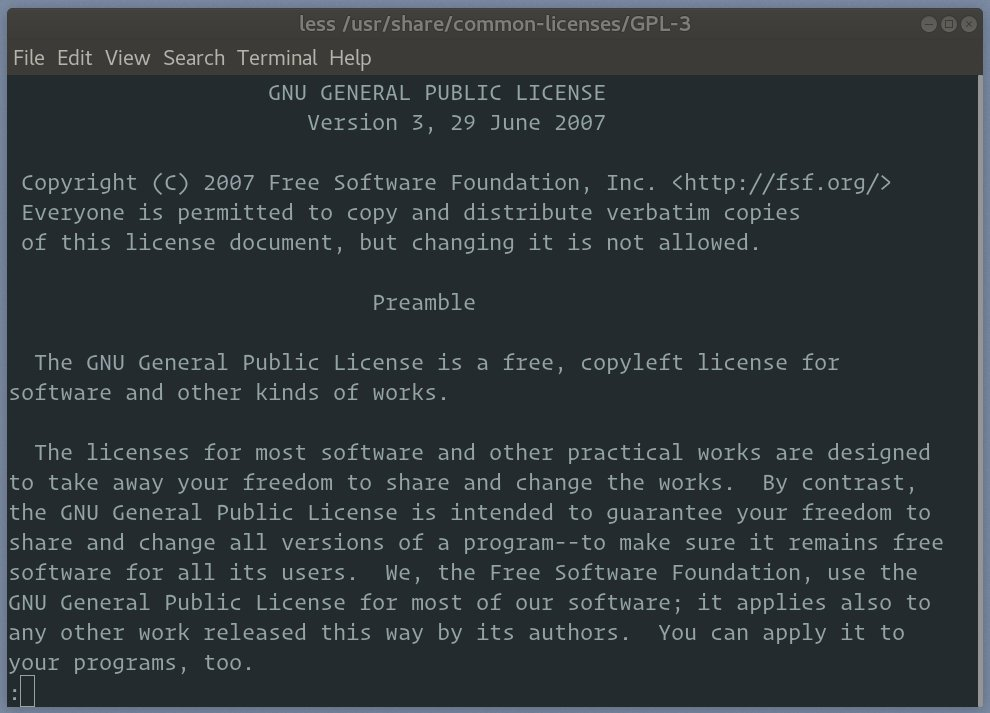

Linux 中的 less 命令
Less 是一个命令行实用程序，用于显示文件或命令输出的内容，它一次只显示一个页面。它类似于 more ，但具有更高级的功能，允许您在文件中向前和向后导航。
该 less 命令主要用于打开大文件。less 不会读取整个文件，相比于 vim 或 nano 等文本编辑器，加载时间会更快。
如何使用 less
less 命令的一般语法如下：
less [OPTIONS] filename
例如，要查看 /usr/share/common-licenses/GPL-3的文件内容，您要输入：
less /usr/share/common-licenses/GPL-3

您还可以使用管道将命令的输出重定向到 less。例如，要逐页查看命令 ps 的输出，请键入：
ps aux | less
浏览文件内容
打开的文件内容太大而无法放入一个页面时，您将看到一个冒号 (:) 。
要转到下一页，请 f 按键或 空格键 。如果要向下移动特定数量的行，请键入数字，后跟空格或 f 键。
您可以按 向下键 或 回车 向后滚动一行，通过 向上键 向前滚动一行。
要返回上一页，请 b 按键。通过键入数字后跟 b 键，向上移动特定行数。
如果要搜索模式，请键入 / ，然后键入要搜索的模式。一旦你按下回车键， less 就会向前搜索匹配项。向后搜索使用 ? 后跟搜索模式。
到达文件末尾时，字符串 (END) 显示在屏幕底部。
要退出 less 并返回命令行，请按 q 。
less 选项
如果要 less 显示行号，请使用以下 -N 选项启动程序：
less -N filename
默认情况下， less 退出时，将从屏幕中清除文件内容。要在屏幕上保留文件内容，请使用以下 -X 选项：
less -X filename
该 +F 选项告诉 less 您查看文件内容可能会更改。这在打开日志文件时很有用。
less +F /var/log/messages
添加了 +F 选项的 less的表现与 tail -f 命令几乎相同。
less 命令
该 less 程序包含许多命令，允许您浏览文件内容并搜索字符串。如果您要查看所有命令的完整列表，请使用 h 。
下面是一些最常用的命令，用于在 less 查看时浏览文件内容：
| 命令 | 行动 |
|---|---|
向下箭头 ， 回车 ， e ，或者 j |
前进一行。 |
向下上箭头 ， y 或 k |
向后移动一行。 |
空格 或者 f |
向前移动一页。 |
b |
向后移动一页。 |
/pattern |
向前搜索匹配模式。 |
? pattern |
向后搜索匹配的模式。 |
n |
重复上一次搜索。 |
N |
反向重复上一次搜索。 |
g |
转到文件的第一行。 |
Ng |
转到文件中的第N行。 |
G |
转到文件的最后一行。 |
p |
转到 ile 的开头。 |
Np |
转到N％进入档案。 |
h |
显示帮助。 |
q |
退出 less 。 |
结论
到目前为止，您应该很好地理解如何使用该 less 命令。